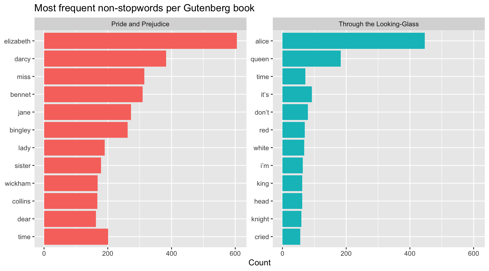

Import tabular, textual, and XML language data into R.
Use tidyverse workflows for exploratory statistics and visualization.
Tokenize and analyze Gutenberg texts with tidytext.
Extract structured information from LOD XML with xml2.
Solve format-specific exercises for CSV, text, and XML data.
This session covers three common data formats for language analytics:
CSV (tabular data)
Text from Project Gutenberg (tidytext workflow)
XML from the LOD dictionary
Each section ends with dedicated exercises. Explained solutions are provided in sessions/session-02-solutions.qmd.
1 Setup
First, load the data from the GitHub repository https://github.com/PeterGilles/Language-Analytics-in-R. Use either the download function on GitHub or use git clone that will allow you to easily update the data with new versions.
This block loads all packages used in this session and defines a helper function for robust file paths.
library(tidyverse)
Warning: package 'ggplot2' was built under R version 4.5.2
Warning: package 'tibble' was built under R version 4.5.2
Warning: package 'tidyr' was built under R version 4.5.2
Warning: package 'readr' was built under R version 4.5.2
Warning: package 'purrr' was built under R version 4.5.2
Warning: package 'dplyr' was built under R version 4.5.2
library(tidytext)library(gutenbergr)
Warning: package 'gutenbergr' was built under R version 4.5.2
library(xml2)
Warning: package 'xml2' was built under R version 4.5.2
read_csv(..., locale = locale(encoding = \"ISO-8859-1\")) imports text with the correct source encoding.
Printing pop gives a quick first look at rows and columns.
If your data is in Excel format (.xlsx) instead of CSV, use read_excel() from package readxl:
# install.packages("readxl") # run once if neededxlsx_path <-resolve_path("my-data.xlsx")excel_data <- readxl::read_excel( xlsx_path,sheet =1)excel_data
What happens:
readxl::read_excel() reads an Excel worksheet into a tibble.
sheet = 1 selects the first sheet (you can also use a sheet name).
The resulting object can be used exactly like pop in tidyverse workflows.
This block performs structural inspection (shape and variable names).
Create a histogram of total_population and briefly describe its shape.
Export the tibble pop_totals to a csv file using write.csv.
3 Part 2 — Working with text data from Project Gutenberg using tidytext
We use tidytext ideas: convert text to one-token-per-row, remove stop words, and compare frequencies. Data comes from Project Gutenberg using the R package gutenbergr (documentation here) - make sure it is installed and loaded.
3.1 Download and tokenize Gutenberg texts
This block downloads two books from Project Gutenberg, including title metadata.
gutenberg_books <-gutenberg_download(c(12, 1342), # Through the Looking-Glass, Pride and Prejudicemeta_fields =c("author", "title"))
Using mirror https://aleph.pglaf.org.
gutenberg_books
# A tibble: 18,594 × 4
gutenberg_id text author title
<int> <chr> <chr> <chr>
1 12 "[Illustration]" Carroll, Lewis Through the Looking…
2 12 "" Carroll, Lewis Through the Looking…
3 12 "" Carroll, Lewis Through the Looking…
4 12 "" Carroll, Lewis Through the Looking…
5 12 "" Carroll, Lewis Through the Looking…
6 12 "THROUGH THE LOOKING-GLASS" Carroll, Lewis Through the Looking…
7 12 "" Carroll, Lewis Through the Looking…
8 12 "And What Alice Found There" Carroll, Lewis Through the Looking…
9 12 "" Carroll, Lewis Through the Looking…
10 12 "By Lewis Carroll" Carroll, Lewis Through the Looking…
# ℹ 18,584 more rows
What happens:
gutenberg_download() retrieves cleaned text (header/footer removed).
Each row is one line of text, with gutenberg_id , author and title.
The table is now ready for tokenization.
This block converts lines into words and removes stop words.
stop_words is a built-in lexicon from tidytext containing very frequent function words such as articles, pronouns, and prepositions (e.g. the, and, of, to). These words are often useful for grammar, but less useful when you want fast topic-oriented exploration of lexical content.
Important caveat: stop-word removal is a modeling choice, not a universal rule. For stylistic analysis, authorship studies, or grammatical research, you may want to keep stop words.
tokens <- gutenberg_books |>unnest_tokens(word, text) |>anti_join(stop_words, by =join_by(word))tokens
# A tibble: 49,702 × 4
gutenberg_id author title word
<int> <chr> <chr> <chr>
1 12 Carroll, Lewis Through the Looking-Glass illustration
2 12 Carroll, Lewis Through the Looking-Glass glass
3 12 Carroll, Lewis Through the Looking-Glass alice
4 12 Carroll, Lewis Through the Looking-Glass found
5 12 Carroll, Lewis Through the Looking-Glass lewis
6 12 Carroll, Lewis Through the Looking-Glass carroll
7 12 Carroll, Lewis Through the Looking-Glass millennium
8 12 Carroll, Lewis Through the Looking-Glass fulcrum
9 12 Carroll, Lewis Through the Looking-Glass edition
10 12 Carroll, Lewis Through the Looking-Glass 1.7
# ℹ 49,692 more rows
What happens:
unnest_tokens(word, text) turns each line into multiple word rows.
Tokens are lowercase by default and punctuation is removed.
anti_join(stop_words, by = join_by(word)) removes tokens that appear in the stop-word list.
The result keeps mostly content words, so top-frequency tables are usually more interpretable.
3.2 Explore word frequencies
This block counts how often each word appears in each title.
# A tibble: 30 × 3
title word n
<chr> <chr> <int>
1 Pride and Prejudice elizabeth 605
2 Pride and Prejudice darcy 383
3 Pride and Prejudice miss 315
4 Pride and Prejudice bennet 309
5 Pride and Prejudice jane 273
6 Pride and Prejudice bingley 262
7 Pride and Prejudice time 201
8 Pride and Prejudice lady 190
9 Pride and Prejudice sister 179
10 Pride and Prejudice wickham 168
# ℹ 20 more rows
What happens:
count(title, word) computes frequencies per book.
sort = TRUE returns highest counts first.
Grouping + slice_head() keeps the top words for each book.
This block visualizes top words by title in faceted panels.
top_words |>group_by(title) |>slice_head(n =12) |>ungroup() |>mutate(word =fct_reorder(word, n)) |>ggplot(aes(x = n, y = word, fill = title)) +geom_col(show.legend =FALSE) +facet_wrap(vars(title), scales ="free_y") +labs(title ="Most frequent non-stopwords per Gutenberg book",x ="Count",y =NULL )

What happens:
We plot only the top 12 words for readability.
facet_wrap() produces one panel per book.
Students can compare lexical profiles side by side.
3.3 Compare distinctive words with tf-idf
TF–IDF (term frequency–inverse document frequency) scores how characteristic a word is for one text relative to the whole set you are comparing.
Term frequency (TF) — how often the word appears in that book (here reflected in the count column n after count(title, word)). A word that appears many times in Alice has high TF for Alice.
Inverse document frequency (IDF) — how unusual the word is across books. If a word appears in almost every title with similar counts, IDF is low (it is not distinguishing). If a word is concentrated in one book, IDF is higher for that contrast.
TF × IDF — the product (stored as tf_idf in tidytext) is high when the word is both frequent in that book and not equally typical everywhere else. That is why high tf_idf words are often proper names, place words, or topic-specific vocabulary, while raw “most frequent” lists are often dominated by shared literary English.
book_tfidf <- tokens |>count(title, word, sort =TRUE) |>bind_tf_idf(word, title, n) |>arrange(desc(tf_idf))book_tfidf |>group_by(title) |>slice_head(n =10) |>ungroup() |>select(title, word, n, tf_idf)
# A tibble: 20 × 4
title word n tf_idf
<chr> <chr> <int> <dbl>
1 Pride and Prejudice elizabeth 605 0.0106
2 Pride and Prejudice darcy 383 0.00669
3 Pride and Prejudice bennet 309 0.00540
4 Pride and Prejudice jane 273 0.00477
5 Pride and Prejudice bingley 262 0.00457
6 Pride and Prejudice wickham 168 0.00293
7 Pride and Prejudice collins 167 0.00292
8 Pride and Prejudice family 152 0.00265
9 Pride and Prejudice lydia 136 0.00237
10 Pride and Prejudice catherine 116 0.00203
11 Through the Looking-Glass alice 447 0.0310
12 Through the Looking-Glass queen 183 0.0127
13 Through the Looking-Glass it’s 92 0.00637
14 Through the Looking-Glass knight 59 0.00409
15 Through the Looking-Glass dumpty 55 0.00381
16 Through the Looking-Glass humpty 55 0.00381
17 Through the Looking-Glass that’s 45 0.00312
18 Through the Looking-Glass didn’t 37 0.00256
19 Through the Looking-Glass couldn’t 36 0.00249
20 Through the Looking-Glass i’ll 36 0.00249
What happens:
count(title, word) builds a table of how many times each word appears in each title (document).
bind_tf_idf(word, title, n) adds three columns: tf (term frequency in that document), idf (inverse document frequency in the corpus), and tf_idf (their product).
We sort by tf_idf and show the top terms per book so you can read off distinctive words, not just frequent ones.
Interpretation: compare a high-tf_idf word’s role in the story (character, place, motif) with its n — a word can be distinctive with a moderate n if it barely appears in the other books.
3.4 Analyze word pairs with bigrams (Hermann Hesse)
Following the tidytext n-grams workflow, we now move from single words to bigrams (two consecutive words).
Here we use three works by the German author Hermann Hesse from Project Gutenberg.
# A tibble: 10 × 3
title bigram n
<chr> <chr> <int>
1 Thus Spake Zarathustra: A Book for All and None spake zarathustra 91
2 Thus Spake Zarathustra: A Book for All and None thou art 60
3 Thus Spake Zarathustra: A Book for All and None thou hast 39
4 Thus Spake Zarathustra: A Book for All and None wilt thou 39
5 Thus Spake Zarathustra: A Book for All and None dost thou 31
6 Thus Spake Zarathustra: A Book for All and None art thou 28
7 Thus Spake Zarathustra: A Book for All and None hast thou 26
8 Thus Spake Zarathustra: A Book for All and None didst thou 22
9 Thus Spake Zarathustra: A Book for All and None mine animals 19
10 Thus Spake Zarathustra: A Book for All and None thou thyself 19
separate_wider_delim() splits each bigram into word1 and word2.
We remove stop words in both positions to focus on more informative pairs.
count(title, word1, word2, sort = TRUE) gives the most frequent word-pair patterns per text.
3.4.1 Note on lexical diversity
In Exercise 5, lexical diversity is defined as:
n_distinct(word) / n()
n_distinct(word) = number of unique word forms (the vocabulary size in your token table).
n() = total number of tokens (all running words).
The ratio is often called type-token ratio (TTR).
Interpretation:
Higher values mean a larger share of unique words (more varied vocabulary in that sample).
Lower values mean more repetition of the same words.
Important caveat: this measure is sensitive to text length (shorter texts often look more diverse), so compare texts of similar size or interpret with care.
3.5 Exercises (Gutenberg + tidytext)
Download one random Gutenberg text (choose one ID yourself), tokenize it, and compute the top 20 non-stopwords.
Download from the Gutenberg archive the first 3 works by Wells, H. G. (Herbert George), create a token table for this mini-corpus, then build a three-book dataset (bind_rows()) and compare top words across books.
Compute tf-idf for the three-book dataset and interpret two high tf-idf words per book.
Compute bigrams (token = "ngrams", n = 2) for one selected book and list the 20 most frequent bigrams after removing rows that contain stop words.
For each of the three books, compute lexical diversity as n_distinct(word) / n() and compare the values.
4 Part 3 — Working with XML data
We are working here with the data of the entire Lëtzebuerger Online Dictionary (LOD). The XML file of the entire dictionary can be downloaded from the Luxembourg open data portal (LOD resource).
Conceptually, the XML workflow has four steps:
Read the XML tree (read_xml()).
Select <entry> nodes with XPath.
Extract a few fields from each entry.
Combine extracted rows into one tidy tibble.
4.1 Read XML and inspect structure
This block parses the XML file and checks basic structure.
means: first find the <lemma> node inside one entry, then extract only its text value.
4.2 Build a tidy tibble from XML
This block converts XML nodes into a tidy one-row-per-entry table.
# Full extraction over all entries is computationally heavy.# We keep classroom render fast by using a sample.entry_nodes <-xml_find_all(lod_xml, "//entry")sample_n <-1000entry_idx <-sample.int(length(entry_nodes), size = sample_n)entry_sample <- entry_nodes[entry_idx]extract_entry <-function(entry_node) {# Pull all English translation strings for one entry. en_translations <-xml_find_all( entry_node,".//meaning/targetLanguage[@lang='en']/translation" ) |>xml_text()# Return one-row tibble for this entry.tibble(lemma =xml_find_first(entry_node, ".//lemma") |>xml_text(),ipa =xml_find_first(entry_node, ".//ipa") |>xml_text(),n_en_translations =length(en_translations),first_en_translation = en_translations |>first(default =NA_character_) )}# takes some timelod_entries <- entry_sample |>map(extract_entry) |>list_rbind()lod_entries |>slice_head(n =20)
# A tibble: 20 × 4
lemma ipa n_en_translations first_en_translation
<chr> <chr> <int> <chr>
1 qualifizéieren kɑlifitsˈɜɪə… 1 to qualify (for)
2 embêtéiert ɑ̃ːmbɛːtˈɜɪɐt 2 to be embarrassed
3 Späicherliicht ʃpæːɪɕɐlˈiːɕt 1 skylight
4 Hongkong <NA> 1 Hong Kong
5 Choreographie koʀeoɡʀɑfˈiː 0 <NA>
6 Bléckkontakt <NA> 2 eye contact
7 léierräich lˈɜɪɐʀæːɪɕ 0 <NA>
8 Meitnerium mɑɪtnˈeːʀium 1 meitnerium
9 Col kol 2 collar
10 Stéifschwëster ʃtˈɜɪfʃwəstɐ 1 stepsister
11 Urecht ˈuʀæɕt 1 right
12 Häerz-Kreeslaf-Krankheet hɛːɐ̯tskʀˈeːs… 1 cardiovascular dise…
13 Nohëllef nˈoːhələf 2 coaching
14 Feldhärin fˈælthɛːʀin 2 general
15 Är ɛːɐ̯ 8 your
16 Versement vˈɛʀsəmɑ̃ː 2 deposit
17 Ochs oks 2 ox
18 genau ɡenˈɑʊ 0 <NA>
19 erofkucken əʀˈoːfkukən 1 to look down
20 gewinnen ɡəvˈinən 3 to get used to
What happens:
entry_nodes is an XML node set with all <entry> elements.
We randomly sample 1,000 entries so rendering stays fast.
extract_entry() runs on one XML node and returns one tibble row.
xml_find_first() gives an XML node object; xml_text() converts that node into a character string.
map(extract_entry) creates a list of small tibbles; list_rbind() stacks them into one dataset.
first(..., default = NA_character_) avoids an error when an entry has no English translation.
This block lists the most common first English translations.
# A tibble: 20 × 2
first_en_translation n
<chr> <int>
1 ball 2
2 general 2
3 paediatrician 2
4 professional 2
5 pure 2
6 researcher 2
7 to assist 2
8 to change 2
9 to smoke 2
10 to squeeze together 2
11 to tear off 2
12 to tie up 2
13 (Sicilian) Mafia 1
14 (air) turbulence 1
15 (bubonic) plague 1
16 (lasting) for hours 1
17 (local) planning authority 1
18 (protective) vaccination 1
19 (railway) station 1
20 (yellow) ochre 1
What happens:
Missing translations are filtered out.
Frequencies are counted and ranked.
This provides a quick lexical overview of common gloss labels in the sample.
4.3 Exercises (XML / LOD)
Extract a tibble with columns lemma, ipa, and n_examples (number of <example> nodes per entry).
Create a table of the 25 most common first English translations and discuss why this summary may be linguistically limited.
Sample 30 entries with at least one English translation and inspect whether lemma and first_en_translation appear semantically aligned.
Create a summary table of average, median, and maximum n_examples across sampled entries.
Build a filtered table of entries with both an IPA value and at least one English translation, and report the share of sampled entries that satisfy both conditions.
Extract partofspeech for each sampled entry (together with lemma) and list the 20 most frequent part-of-speech labels.
5 Solutions
Explained solutions for all exercise blocks are in sessions/session-02-solutions.qmd.